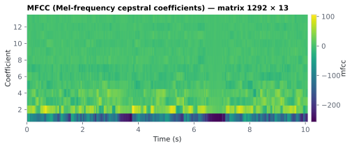

On this page
6.5.4MFCC (Mel-frequency cepstral coefficients)
Mel-frequency cepstral coefficients (MFCCs) are a compact, decorrelated summary of the spectral shape at each instant.
6.5.4.1What it is
Mel-frequency cepstral coefficients (MFCCs) are a compact, decorrelated summary of the spectral shape at each instant. They are computed from the log-mel spectrogram by a discrete cosine transform (DCT) across the mel bands, which concentrates the spectral-envelope information into a handful of coefficients. MFCCs are the classic feature of automatic speech recognition and speaker recognition Davis 1980.
Emitted as a 2-D array mfcc of shape (N, n_mfcc) (default n_mfcc = 13)
in acoustic/<stim>_acoustic.mat, on the shared grid (t, fs).
Off by default (toggle feat_acoustic_ts_mfcc).
6.5.4.2See it

6.5.4.3In your output
| variable | size | MATLAB class |
|---|---|---|
mfcc | 1292 × 13 | double |
t | 1292 × 1 | double |
fs | 1 × 1 | double |
6.5.4.4MATLAB
S = load('acoustic/LJ002-0321_acoustic.mat');
whos('-file', 'acoustic/LJ002-0321_acoustic.mat') % variables, sizes, classes
imagesc(S.t, 1:size(S.mfcc, 2), S.mfcc'); axis xy
xlabel('Time (s)'); ylabel('coefficient'); colorbar
6.5.4.5How it's computed
Source sensi/extractors/acoustic_ts.py → mfcc(...), via librosa.feature.mfcc
with the same framing as the log-mel: hop = round(sr/rate) (frame rate = analysis_rate), ~25 ms window, n_fft = next
power of two ≥ window, n_mels mel bands over [fmin, fmax]. librosa then
takes the log of the mel spectrogram and applies a type-II DCT, keeping the
first n_mfcc coefficients. The result is transposed to (frames, n_mfcc)
and fit to exactly N rows. The first coefficient (MFCC-0) reflects
overall log-energy; higher coefficients describe progressively finer detail
of the spectral envelope.
6.5.4.6EEG rationale — read this before using MFCCs
For TRF / cortical-tracking work the log-mel spectrogram is usually the better choice, and MFCCs are provided for completeness rather than as a primary predictor.
The reason is the DCT. It rotates the mel-band representation into an abstract cepstral basis, which removes the tonotopic (frequency-band) interpretability that makes the log-mel features map onto the auditory system's frequency-organized response. A TRF weight on mel band 4 has a clear meaning ("response to ~500 Hz energy"); a TRF weight on MFCC-4 does not correspond to any single frequency region. The spectrotemporal model used in the cortical-tracking literature is a band-energy spectrogram (16 bands, 250 Hz–8 kHz in Di Liberto 2015), not MFCCs. MFCCs remain useful if you specifically want a low-dimensional, decorrelated acoustic summary (e.g. as a compact nuisance regressor, for stimulus-similarity/clustering, or to connect to ASR-style analyses).
The "log-mel over MFCC for TRF" guidance rests on two things. The loss of frequency interpretability follows from the math: each MFCC is a cosine- weighted sum over all mel bands, so no coefficient belongs to one frequency region. And TRF practice models the auditory periphery with band-energy spectrograms (log-spaced bands, which "model the frequency analysis performed by the auditory periphery" Crosse 2016). It is a methodological recommendation, not a claim that MFCCs cannot carry decodable information.
6.5.4.7How to set the analysis rate to match your EEG
Identical to the other acoustic features: set analysis_rate to your EEG
rate (typically 64–128 Hz) and mfcc will have round(duration × rate) rows
aligned to t/fs. n_mfcc is your predictor count (13 is the ASR
convention; you rarely need more for TRF). It can't exceed n_mels, since the
coefficients are computed from the mel bands: the Run tab and run.py refuse
n_mfcc > n_mels, and the .mat config.n_mfcc records the number actually
computed. MFCC values are returned raw;
z-score per coefficient in your TRF pipeline before fitting, and note that
MFCC-0 (energy) is on a very different scale from the higher coefficients.
When MFCCs are enabled and the log-mel is not, mel_center_freqs is still
written for reference (the mel bands the DCT was taken over).
6.5.4.8In the code
mfcc(y, sr, rate, *, n_mfcc, n_mels, fmin, fmax) shares the framing helpers
with log_mel_spectrogram, so MFCCs and the log-mel are computed over the
same windows and bands. In extract_acoustic, MFCCs are gated by
cfg["mfcc"] (default False); when on, mel_center_freqs is populated from
librosa_mel_freqs(...) if the log-mel did not already write it.
6.5.4.9Library
from extractors.acoustic_ts import mfcc, mel_range
fmin, fmax = mel_range("speech", sr)
m = mfcc(y, sr, rate=128, n_mfcc=13, n_mels=16, fmin=fmin, fmax=fmax)
# m.shape == (round(len(y)/sr*128), 13)
6.5.4.10Papers
- Davis 1980 Davis & Mermelstein. Comparison of Parametric Representations for Monosyllabic Word Recognition in Continuously Spoken Sentences. IEEE Transactions on Acoustics, Speech, and Signal Processing 28(4), 357–366. doi:10.1109/TASSP.1980.1163420 — introduces MFCCs.
- Di Liberto 2015 Di Liberto, O'Sullivan, Lalor. Low-Frequency Cortical Entrainment to Speech Reflects Phoneme-Level Processing. Current Biology 25(19), 2457–2465. doi:10.1016/j.cub.2015.08.030 — the acoustic TRF baseline is a 16-band spectrogram, not MFCCs.
- Stevens 1937 Stevens, Volkmann, Newman. A Scale for the Measurement of the Psychological Magnitude Pitch. Journal of the Acoustical Society of America 8(3), 185–190. doi:10.1121/1.1915893 — the mel scale underlying the filterbank the DCT is taken over.
- Crosse 2016 Crosse, Di Liberto, Bednar, Lalor. The Multivariate Temporal Response Function (mTRF) Toolbox: A MATLAB Toolbox for Relating Neural Signals to Continuous Stimuli. Frontiers in Human Neuroscience 10, 604. doi:10.3389/fnhum.2016.00604 — spectrogram of 16 log-spaced bands (250 Hz–8 kHz) as the multivariate TRF example.